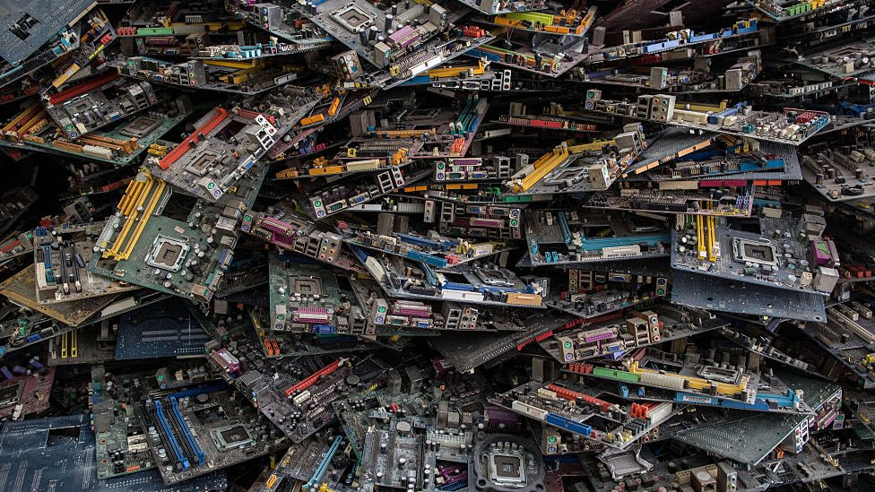

Residuos informáticos (E-Waste)
Navegación rápida:
1. Definición y Clasificación del E-Waste
Se considera residuo electrónico o E-Waste a cualquier dispositivo que funcione con corriente eléctrica o baterías y que su dueño decide desechar. No solo hablamos de ordenadores; hoy en día, desde un cepillo de dientes eléctrico hasta un servidor de datos gigante entran en esta categoría.
El crecimiento de estos residuos es exponencial. Según el Global E-waste Monitor, generamos más de 62 millones de toneladas al año, y lo peor es que esta cifra sube un 82% más rápido de lo que sube nuestra capacidad para reciclarlos.
Podemos clasificar los residuos informáticos en tres grandes grupos:
- Equipos de informática y telecomunicaciones: Servidores, portátiles, tablets y móviles.
- Periféricos y accesorios: Teclados, ratones, cables, cargadores y auriculares.
- Electrónica de consumo: Monitores, televisores y dispositivos inteligentes (IoT).

2. Componentes Críticos y Toxicidad
Un ordenador moderno es una "joya química". Contiene metales preciosos como oro, plata y paladio, pero para que funcionen, también necesitan elementos que, fuera de su carcasa, son venenosos.
3. El Viaje de la Basura: Impacto Global
Uno de los mayores escándalos de los residuos informáticos es su transporte ilegal. Muchos países desarrollados envían contenedores de "equipos usados para donar" a países en desarrollo (como Ghana, Nigeria o India). En realidad, son basura tecnológica inservible.

En estos lugares, miles de personas (incluidos niños) trabajan quemando plásticos para recuperar el cobre de los cables, exponiéndose a enfermedades crónicas y destruyendo el suelo local de forma permanente.
4. Ciclo de Reciclaje y Soluciones
El reciclaje de un ordenador no es como el de un cartón. Sigue un proceso complejo:
- Recogida: Los usuarios llevan el equipo al Punto Limpio.
- Descontaminación: Se extraen manualmente las baterías, cartuchos de tinta y componentes con mercurio.
- Trituración: El resto se tritura en pequeñas piezas.
- Separación electromagnética: Mediante imanes y corrientes de aire, se separan los plásticos de los metales (hierro, aluminio, cobre y metales preciosos).
¿Qué podemos hacer nosotros? Lo más importante es alargar la vida útil del equipo. Si un PC va lento, podemos ampliar la RAM o poner un disco SSD en lugar de comprar uno nuevo. Si realmente ya no sirve, el 100% debe ir a una planta de tratamiento autorizada.